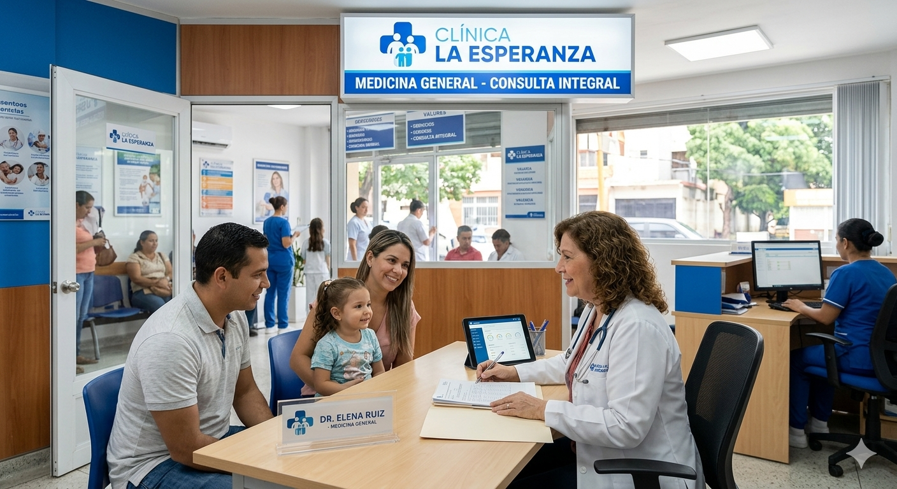
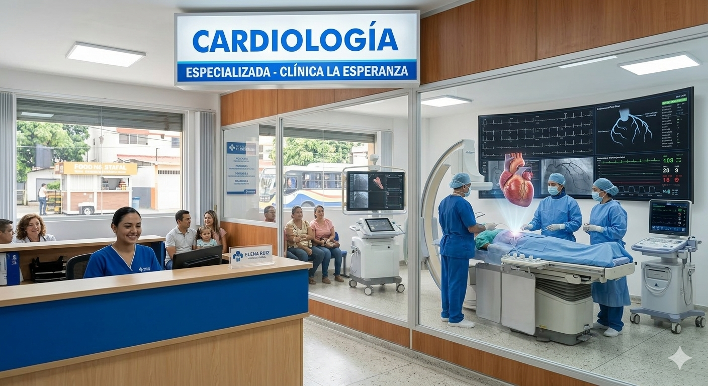
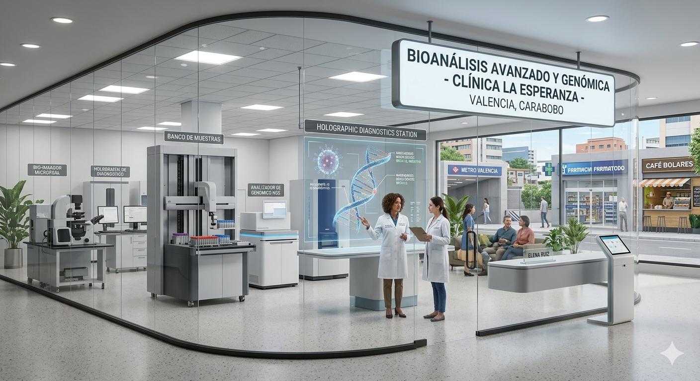
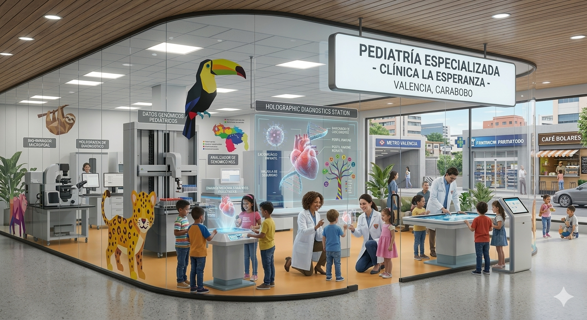
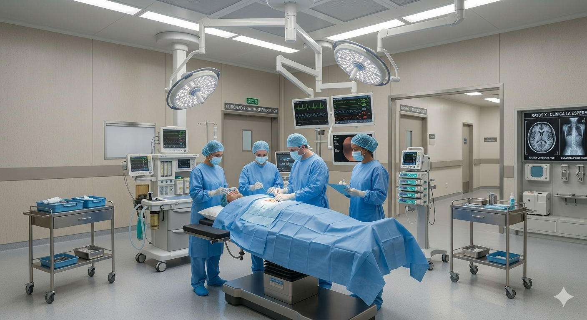
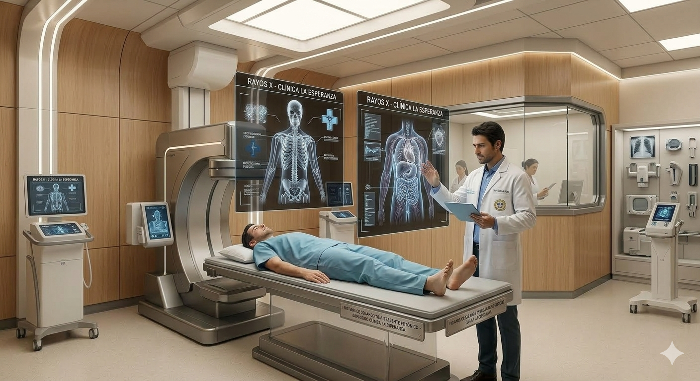

Medicina General
Es nuestro corazón operativo. Aquí es donde comienza todo. Nuestros médicos generales son los encargados de realizar el primer contacto, evaluando de forma integral tu estado de salud. Se encargan de la prevención, el diagnóstico de enfermedades comunes y, lo más importante, de coordinar tu camino hacia los especialistas si es necesario.

Cardiología
En esta área nos enfocamos exclusivamente en el motor de tu vida. Nos dedicamos al estudio, diagnóstico y tratamiento de las enfermedades del corazón y del sistema circulatorio. Ya sea un chequeo de rutina para deportistas o el control de la hipertensión,aquí cuidamos que cada latido sea fuerte y saludable.

Bioanálisis
Es el lugar donde la ciencia nos da las respuestas que no se ven a simple vista. En nuestro laboratorio, analizamos muestras biológicas (como sangre u orina) para obtener datos precisos que confirmen un diagnóstico. Es la base científica que permite a nuestros doctores recetar el tratamiento exacto que necesitas.

Pediatría
Aquí el lenguaje es diferente: se habla con paciencia y muchas sonrisas. La pediatría en La Esperanza no solo trata enfermedades infantiles, sino que acompaña el crecimiento y desarrollo de los más pequeños, desde que nacen hasta la adolescencia, asegurando que crezcan sanos y protegidos.

Quirófano
Es nuestra área de máxima precisión y esterilidad. Contamos con un espacio equipado con tecnología de punta para realizar intervenciones quirúrgicas, ya sean programadas o de emergencia. Aquí, nuestro equipo de cirujanos, anestesiólogos y enfermeras trabajan con rigor absoluto para resolver problemas que requieren una acción física directa.

Rayos X (Radiología)
Es nuestra capacidad de ver a través de lo invisible. Gracias a esta tecnología, obtenemos imágenes detalladas de tus huesos y órganos internos. Es una herramienta vital para detectar desde una pequeña fractura hasta problemas pulmonares, permitiéndonos actuar con rapidez y sin adivinanzas.
